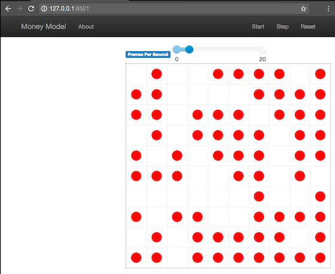
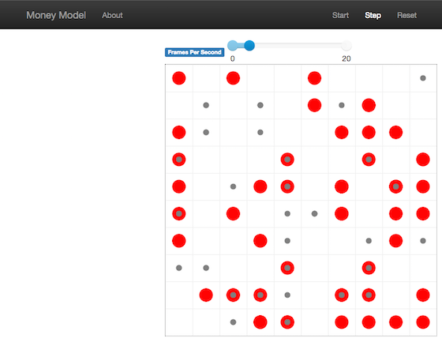

1.5. Optional features¶
This section presents two optional features of Mesa. They will be useful in the third session of the course (not next week, but the next one). You can skip it for now and consider today’s session over. You will be able to come back to this tutorial later if required.
The two features are:
Data collection
Interactive visualization
1. Collecting data¶
Mesa provides a class which can handle data collection and storage at runtime, which avoids to manipulates tables or dictionaries manually in the model. All this is done via the DataCollector class:
from mesa.datacollection import DataCollector
The data collector stores three categories of data: model-level variables, agent-level variables, and tables (which are a catch-all for everything else).
Agent-level¶
First, let us consider an agent-level variable. Imagine we want to store the value of each agent’s wealth at each time step. We must add in the MoneyModel constructor a DataCollector with the parameter agent_reporters set to a dictionary that associates the label of the data and the name of the collected variable:
self.datacollector = DataCollector(agent_reporters={"Wealth": "wealth"})
We now simply tell the model to collect data with:
self.datacollector.collect(self)
each time we want to store values (e.g. right before or after we call self.schedule.step()).
Once the execution is finished, we can retrieve the data with:
model.datacollector.get_agent_vars_dataframe()
The result is a Pandas DataFrame. See the Pandas documentation for more information. You might also want to refer to the user guide for information about Pandas’ data visualization.
Question
Add this data collector to your model and visualize the health value of one or several agents.
Model-level¶
It is also possible to use functions in the collector. For example, assume we want to collect the value of the Gini Coefficient, a measure of wealth inequality, at each time step on the model. Let’s define the compute_gini method:
def compute_gini(model):
agent_wealths = [agent.wealth for agent in model.schedule.agents]
x = sorted(agent_wealths)
N = model.num_agents
B = sum( xi * (N-i) for i,xi in enumerate(x) ) / (N*sum(x))
return (1 + (1/N) - 2*B)
Now, we can collect this data at runtime using the DataCollector with the parameter model_reporters set to a dictionary that associates the label of the data and the above function:
self.datacollector = DataCollector(
model_reporters={"Gini": compute_gini},
agent_reporters={"Wealth": "wealth"})
Note that we still collect the agents’ wealth values.
Question
Visualize the evolution of the Gini Coefficient in the simulation. What do you observe ?
2. Dynamic visualization (optional)¶
So far, we’ve built a model, run it, and analyzed some output afterwards. However, one of the advantages of agent-based models is that we can often watch them run step by step, potentially spotting unexpected patterns, behaviors or bugs, or developing new intuitions, hypotheses, or insights. Other times, watching a model run can explain it to an unfamiliar audience better than static explanations. Like many ABM frameworks, Mesa allows you to create an interactive visualization of the model. In this section we’ll walk through creating a visualization using built-in components.
First, a quick explanation of how Mesa’s interactive visualization works. Visualization is done in a browser window, using JavaScript to draw the different things being visualized at each step of the model. To do this, Mesa launches a small web server, which runs the model, turns each step into a JSON object (essentially, structured plain text) and sends those steps to the browser.
A visualization is built up of a few different modules: for example, a module for drawing agents on a grid, and another one for drawing a chart of some variable. Each module has a Python part, which runs on the server and turns a model state into JSON data; and a JavaScript side, which takes that JSON data and draws it in the browser window. Mesa comes with a few modules built in, and let you add your own as well.
Grid Visualization¶
To start with, let’s have a visualization where we can watch the agents moving around the grid. For this, you will need to put your model code in a separate Python source file; for example, MoneyModel.py. Next, either in the same file or in a new one (e.g. MoneyModel_Viz.py) import the server class and the CanvasGrid class (so-called because it uses HTML5 canvas to draw a grid). If you’re in a new file, you’ll also need to import the actual model object.
from mesa.visualization.modules import CanvasGrid
from mesa.visualization.ModularVisualization import ModularServer
# If MoneyModel.py is where your code is:
# from MoneyModel import MoneyModel
CanvasGrid works by looping over every cell in a grid, and generating a portrayal for every agent it finds. A portrayal is a dictionary (which can easily be turned into a JSON object) which tells the JavaScript side how to draw it. The only thing we need to provide is a function which takes an agent, and returns a portrayal object. Here’s the simplest one: it’ll draw each agent as a red, filled circle which fills half of each cell.
def agent_portrayal(agent):
portrayal = {"Shape": "circle",
"Color": "red",
"Filled": "true",
"Layer": 0,
"r": 0.5}
return portrayal
In addition to the portrayal method, we instantiate a canvas grid with its width and height in cells, and in pixels. In this case, let’s create a 10 x 10 grid, drawn in 500 x 500 pixels.
grid = CanvasGrid(agent_portrayal, 10, 10, 500, 500)
Now we create and launch the actual server. We do this with the following arguments:
The model class we’re running and visualizing; in this case,
MoneyModel.A list of module objects to include in the visualization; here, just
[grid].The title of the model:
"Money Model".Any inputs or arguments for the model itself. In this case, 100 agents, and height and width of 10.
Once we create the server, we set the port for it to listen on (you can treat this as just a piece of the URL you’ll open in the browser). Finally, when you’re ready to run the visualization, use the server’s launch() method.
server = ModularServer(MoneyModel,
[grid],
"Money Model",
{"N":100, "width":10, "height":10})
server.port = 8521 # The default
server.launch()
The full code should now look like:
from MoneyModel import *
from mesa.visualization.modules import CanvasGrid
from mesa.visualization.ModularVisualization import ModularServer
def agent_portrayal(agent):
portrayal = {"Shape": "circle",
"Filled": "true",
"Layer": 0,
"Color": "red",
"r": 0.5}
return portrayal
grid = CanvasGrid(agent_portrayal, 10, 10, 500, 500)
server = ModularServer(MoneyModel,
[grid],
"Money Model",
{"N":100, "width":10, "height":10})
server.port = 8521 # The default
server.launch()
Now run this file; this should launch the interactive visualization server and open your web browser automatically. (If the browser doesn’t open automatically, try pointing it at http://127.0.0.1:8521 manually. If this doesn’t show you the visualization, something may have gone wrong with the server launch.)
You should see something like the figure below: the model title, a grid filled with red circles representing agents, and a set of buttons to the right for running and resetting the model.
Click
stepto advance the model by one step, and the agents will move around.Click
runand the agents will keep moving around, at the rate set by thefps(frames per second) slider at the top. Try moving it around and see how the speed of the model changes.Pressing
pausewill (as you’d expect) pause the model; pressingrunagain will restart it.Finally,
resetwill start a new instantiation of the model.
To stop the visualization server, go back to the terminal where you launched it, and press Control+c.
Changing the agents¶
In the visualization above, all we could see is the agents moving around – but not how much money they had, or anything else of interest. Let’s change it so that agents who are broke (wealth 0) are drawn in grey, smaller, and above agents who still have money.
To do this, we go back to our agent_portrayal code and add some code to change the portrayal based on the agent properties.
def agent_portrayal(agent):
portrayal = {"Shape": "circle",
"Filled": "true",
"r": 0.5}
if agent.wealth > 0:
portrayal["Color"] = "red"
portrayal["Layer"] = 0
else:
portrayal["Color"] = "grey"
portrayal["Layer"] = 1
portrayal["r"] = 0.2
return portrayal
Now launch the server again - this will open a new browser window pointed at the updated visualization. Initially it looks the same, but advance the model and smaller grey circles start to appear. Note that since the zero-wealth agents have a higher layer number, they are drawn on top of the red agents.
Adding a chart¶
Next, let’s add another element to the visualization: a chart, tracking the model’s Gini Coefficient. This is another built-in element that Mesa provides.
from mesa.visualization.modules import ChartModule
The basic chart pulls data from the model’s DataCollector, and draws it as a line graph using the Charts.js JavaScript libraries. We instantiate a chart element with a list of series for the chart to track. Each series is defined in a dictionary, and has a Label (which must match the name of a model-level variable collected by the DataCollector) and a Color name. We can also give the chart the name of the DataCollector object in the model.
Finally, we add the chart to the list of elements in the server. The elements are added to the visualization in the order they appear, so the chart will appear underneath the grid.
chart = ChartModule([{"Label": "Gini",
"Color": "Black"}],
data_collector_name='datacollector')
server = ModularServer(MoneyModel,
[grid, chart],
"Money Model",
{"N":100, "width":10, "height":10})
Launch the visualization and start a model run, and you’ll see a line chart underneath the grid. Every step of the model, the line chart updates along with the grid. Reset the model, and the chart resets too.

User settable parameter¶
The last part of the tutorial helps you to create a visualization interface in order to see the evolution of the ABM in the simulation. To allow faster modification of model parameters, it is possible to use UserSettableParameter. UserSettableParameter means that the user can modify this parameter in the web page. It takes 6 parameters (type, name, initial value, min value, max value, value per step).
Let’s start by importing the right mesa packages:
from mesa.visualization.modules import CanvasGrid, ChartModule, TextElement
from mesa.visualization.UserParam import UserSettableParameter
Then, add the following line in the definition of the ModularServer:
"density": UserSettableParameter("slider", "Agent density", 0.8, 0.1, 1.0, 0.1),
The call of the ModularServer became:
server = ModularServer(MoneyModel,
[grid, chart],
"Money Model",
{"width":10, "height":10, "density": UserSettableParameter("slider", "Agent density", 0.8, 0.1, 1.0, 0.1)})
Note: to be used in the visualization interface, the density should be define in the MoneyModel.